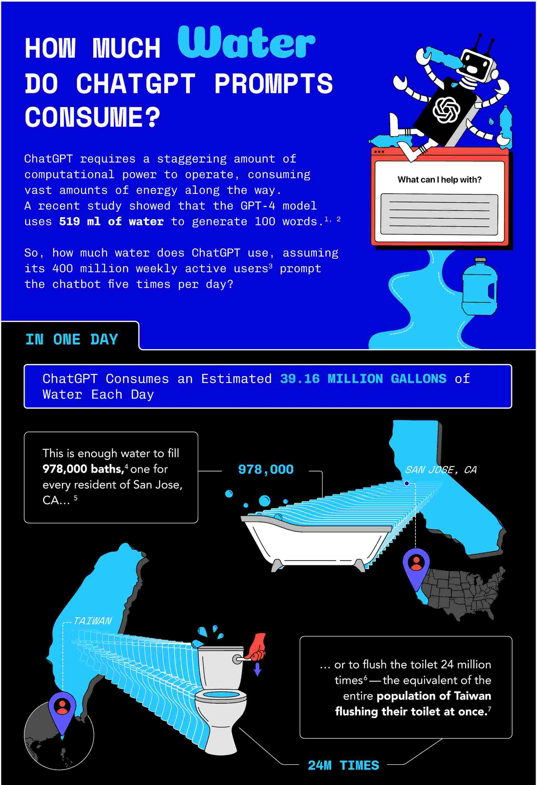
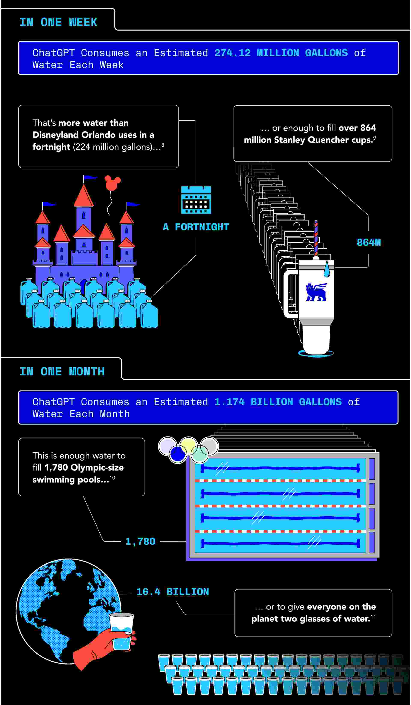
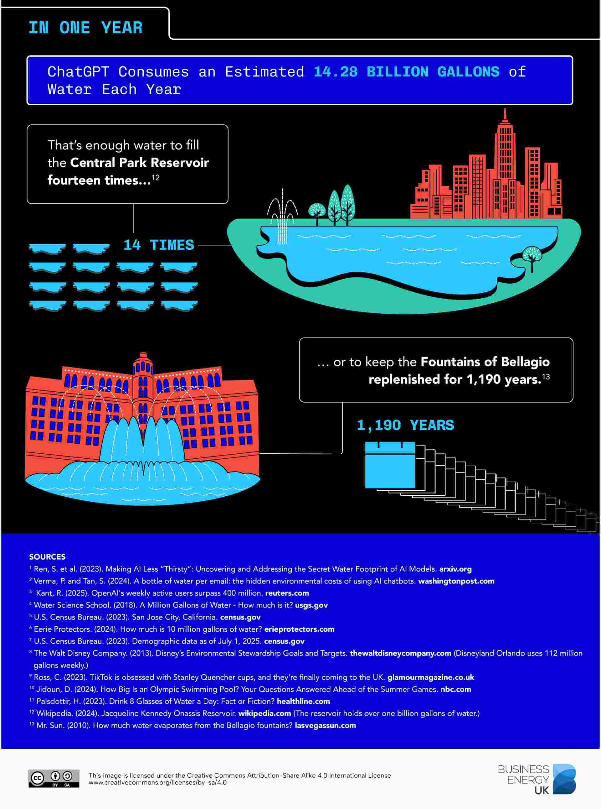

+------+. +------+ +------+ +------+ .+------+
|`. | `. |\ |\ | | /| /| .' | .'|
| `+--+---+ | +----+-+ +------+ +-+----+ | +---+--+' |
| | | | | | | | | | | | | | | | | |
+---+--+. | +-+----+ | +------+ | +----+-+ | .+--+---+
`. | `.| \| \| | | |/ |/ |.' | .'
`+------+ +------+ +------+ +------+ +------+'
⚠︎ THE GENERATIVE AI SCAM ⚠︎
⸮ ﹖ ︖ ⁇ ¿ ‽ ？⁴⁰⁴ Error ⁴⁰⁴ ⸮ ﹖ ︖ ⁇ ¿ ‽ ？
We do not support, encourage, or advocate for the use of Generative AI,
nor should it be mandatory, especially in the creative industry.
Instead of investing in universal healthcare, housing, and food for all, our taxpaying dollars are used to fund the following:
Generative AI is a significant contributor to climate change and
its datacenters rely on an incredible amount of our natural resources,
therefore raising electricity bills.
Generative AI exploits minorities
and perpetuates colonialism, while helping fund a genocide.
Generative AI contributes to
environmental racism and digital blackface.
Generative AI steals and profits off of artists online.
Generative AI has been used to generate nude deepfakes of women and children.
Stalkers have preyed on women with these deepfakes.
Students’ written work are wrongfully accused of AI .
Many students and peers in different schools and universities have experienced this
before and have had to “dumb down” their essays.
More detailed list here.
For a more general summary informing the dangerous truth of Generative AI, please refer to this video.



.+------+ +------+ +------+ +------+ +------+.
.' | .'| /| /| | | |\ |\ |`. | `.
+---+--+' | +-+----+ | +------+ | +----+-+ | `+--+---+
| | | | | | | | | | | | | | | | | |
| ,+--+---+ | +----+-+ +------+ +-+----+ | +---+--+ |
|.' | .' |/ |/ | | \| \| `. | `. |
+------+' +------+ +------+ +------+ `+------+